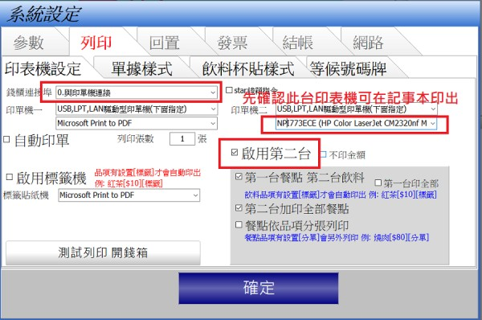

出單機連接埠
但一直無法出單，錢櫃也不跳
可否接惑
1 個回答
1.請確認在記事本或其他文書軟體可否正常印出 如果無法印出請檢查
1.USB線材是否插好?
2.驅動程式連接滬是否正確
印單機 與安裝一般印表機並無多大差異 只要word 記事本等文書軟體
能印出 先用POS就一定能印出
2.如可正常印出在檢查先用軟體的參數

1.請確認在記事本或其他文書軟體可否正常印出 如果無法印出請檢查
1.USB線材是否插好?
2.驅動程式連接滬是否正確
印單機 與安裝一般印表機並無多大差異 只要word 記事本等文書軟體
能印出 先用POS就一定能印出
2.如可正常印出在檢查先用軟體的參數
